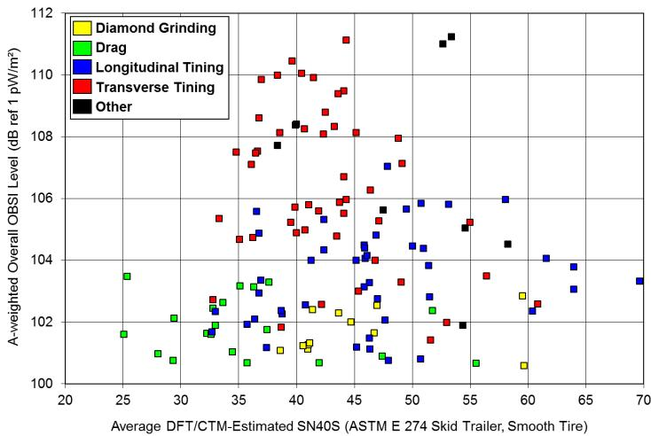
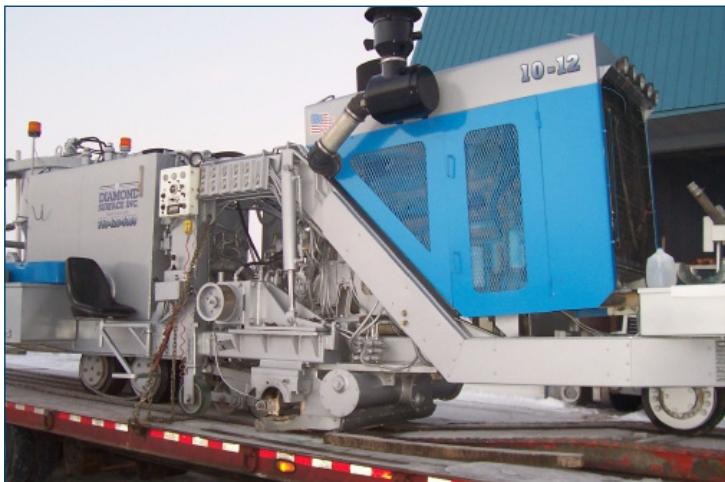
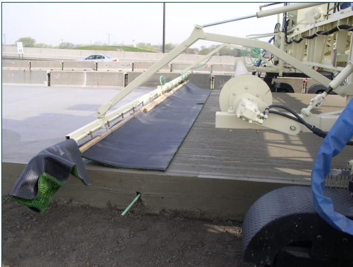
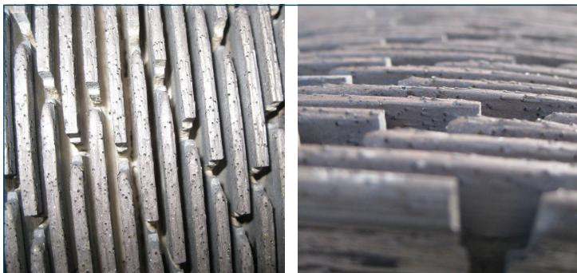
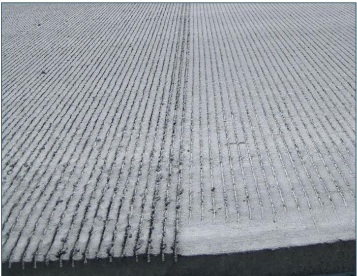
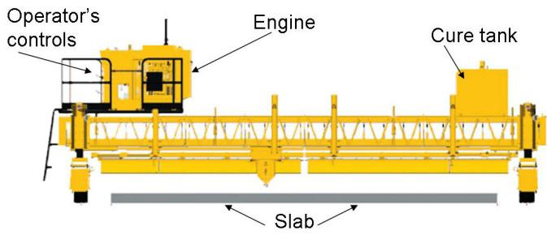
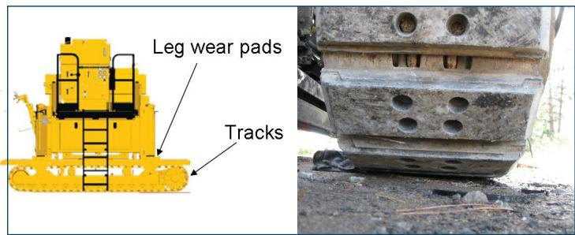

Concrete Texture Application
Concrete texture application is a finishing technique applied while the slab is still plastic—or after it has set enough to be free of bleed water—by pulling a drag media such as artificial turf or moistened coarse burlap across the surface to produce a shallow, negatively‑oriented micro‑roughness[1][3][6][8]. Its purpose is to create controlled micro‑roughness that improves slip resistance, reduces tire‑pavement noise and prevents an overly smooth finish that could jeopardize vehicle safety and rider comfort, especially on wet pavements[1][4][5][7][8]. Effective texture must exhibit a fine pattern finer than one inch—typically 1/8 to 1/4 in.—with grooves oriented longitudinally or, if transverse, closely spaced and randomized, and the concrete mix must contain sufficient polishing‑resistant sand to retain friction at the intended traffic speed[3][5]. The operation is normally performed by a texture machine that follows the paver (or by manual dragging), run at a constant speed with reliable steering and elevation control, after which curing compound is applied immediately so that texturing does not delay moisture protection[3][7][9].
Sources (9)
Purpose and applicability
Across the guides, concrete texture application is presented as the remedy for pavement surfaces that lack a controlled micro‑roughness. When slabs remain overly smooth they suffer from insufficient traction—particularly when wet—and generate excessive tire‑pavement noise, which together jeopardize vehicle safety and rider comfort. The method also prevents an uneven or insufficient surface finish that would otherwise compromise slip resistance and the visual quality of the pavement. [1][3][4][5][7][8]
The following figure illustrates how different texture profiles impact these critical performance metrics.

Comparison of noise and friction for various concrete pavement textures [3]It illustrates that quieter surfaces vary in friction in the same way that louder surfaces do, showing no direct relationship between friction and noise for textures such as drag, longitudinal tining, diamond grinding, and transverse tining. The data points demonstrate that quieter concrete pavements can be durable and cost-effective to build without sacrificing safety because there is not a direct relationship between friction and noise.
[1] — Ch. 3 (pp. 59–60); [3] — 2 Overview of Concrete Pavemen… (pp. 19–37); [4] — Ch. 4 (p. 78); [5] — Ch. 3 (p. 61); [7] — 5. Plant Site and Mixture Prod… (p. 78); [8] — Boom Broom Method (pp. 45–46), Burlap Drag Texture (p. 44)
\u201cDragging artificial turf or moistened, coarse burlap across the surface of plastic concrete creates a shallow surface texture.\u201d This method is appropriate when the pavement serves low‑speed traffic (≤45 mph) because \u201cThis texturing method is inexpensive, results in relatively quiet pavements, and provides sufficient friction characteristics for many roadways, particularly those with speeds less than 45 mph.\u201d It can also satisfy higher‑speed applications if the mix contains polishing‑resistant sand, as \u201cIowa has found that drag textures can provide adequate friction on roadways with higher speeds when the concrete mixture includes adequate amounts of polishing‑resistant (e.g., siliceous) sand\u201d.
When tire‑pavement noise reduction is a priority, a modest texture is required: \u201cA completely smooth concrete surface is not quiet.\u201d and \u201cSome (smaller) texture is necessary in order to minimize the noise that is generated.\u201d Accordingly, \u201cPre‑texturing the pavement with a drag texture prior to tining is therefore important,\u201d especially when longitudinal tining is used because it yields more consistent surfaces. Although \u201cTransverse tining is an inexpensive method for providing durable, high‑friction pavement surfaces\u201d and \u201cThe friction qualities are especially evident on wet pavements,\u201d it should be avoided in noise‑critical projects due to its audible whine.
Equipment considerations: where the corridor can accommodate a texture machine, \u201cIn most concrete paving operations, some variant of a texture machine follows the paver.\u201d The unit \u201cSaid simply, the texture equipment applies the final texture to the surface of the paved concrete.\u201d and \u201cQuite often, liquid curing compound is applied from this equipment, when specified.\u201d If space is limited, \u201cOne instance in which a separate texture machine might not be used in paving operations is when construction conditions are too tight and the width of the machine cannot be accommodated,\u201d so texture must be integrated with the paver or omitted.
Burlap‑based drag textures require proper timing and surface condition: \u201cThe texturing should be completed once the concrete is sufficiently set and without the presence of bleed water (Figures 31 and 32).\u201d \u201cWet burlap can be used for finishing and texturing the trail surface.\u201d It may be attached to equipment – \u201cBurlap that covers the trail width is attached to the back of a paving machine or screed and is dragged along to create the textured surface,\u201d – or applied manually – \u201cIt can also be dragged manually by two people on either side of the trail.\u201d
For strip‑paved slabs, especially those ≤28 ft wide, drag texturing performs best: \u201cworks best when the strip placement method is used and the placement width is narrow, generally not exceeding 28 ft\u201d and \u201cAstroTurf drag texturing is best suited for narrow strip paving.\u201d The process must be clean and properly moist; excess moisture creates a slurry film – \u201cIf the burlap drag produces a slurry film during application, the burlap has too much moisture\u201d – and the surface should be free of dried concrete – \u201cthe AstroTurf drag should be relatively clean and free of dried concrete prior to application.\u201d The drag is applied after screeding and floating but before curing: \u201cAstroTurf drag texturing follows all screeding and floating of the slab and precedes curing compound application.\u201d and \u201cprecedes the application of curing compound.\u201d \u201cDragging wet burlap over the pavement behind the final placement operation provides a uniformly light texture to concrete\u201d.
If any of these prerequisites are not satisfied—high‑speed traffic without polishing‑resistant sand, a need to avoid noise‑producing transverse tining, insufficient set or presence of bleed water, full‑width pours exceeding 28 ft, inability to keep the drag clean or moist, or corridor constraints that preclude a texture machine—another finishing method should be selected. [1][3][6][8]
The following figure illustrates a grinder used for large-scale concrete pavement texturing operations.

A large-scale concrete pavement texturing machine mounted on a flatbed trailer. [3]The image displays a heavy-duty industrial vehicle, identified as a grinder for concrete pavement texturing operations, secured to a transport trailer. This apparatus is the primary tool used to create controlled micro-roughness on road surfaces by grinding grooves into the concrete with diamond-tipped blades. By mechanically abrading the surface, this machine produces the shallow texture necessary for slip resistance and noise reduction.
[1] — Ch. 3 (pp. 59–60); [3] — 2 Overview of Concrete Pavemen… (pp. 19–34); [6] — Burlap (p. 23); [8] — Artificial Grass (AstroTurf) D… (p. 44), Burlap Drag Texture (p. 44)
Required inputs
The texture process relies on a drag media—either artificial turf or moistened, coarse burlap—that is pulled over plastic concrete to form a shallow surface finish. The concrete mix must contain adequate amounts of polishing‑resistant (e.g., siliceous) sand to supply the friction needed for traffic. In addition, the mixture should be well graded; mixtures that are extremely gap graded will tend to segregate during handling and placing, so a balanced aggregate gradation is required. Texturing must be completed while the slab remains wet: finish texturing before the surface of the pavement experiences any drying, and then apply curing compound without delay. [1][3][6][8]
The following figure illustrates the turf drag attachment used to apply this finish.

Turf drag attachment on a texture machine [3]The image displays a mechanical apparatus featuring a long frame with a strip of artificial turf attached to its underside. This device is positioned over a freshly poured concrete slab, demonstrating the equipment used for texturing the surface.
[1] — Ch. 3 (p. 59); [3] — 2 Overview of Concrete Pavemen… (pp. 19–27), App. B (p. 42); [6] — Burlap (p. 23); [8] — Artificial Grass (AstroTurf) D… (p. 44), Burlap Drag Texture (p. 44)
The guides agree that texture patterns must be finer than one inch; any repeating surface pattern shall be avoided at intervals of 1 in. or larger (“Avoid (flatten) texture that repeats itself at intervals of 1 in. or larger.”, “Avoid texture patterns with intervals of 1 in. or greater.”). Fine texture is required on the order of 1/8–1/4 in. (“some fine texture (that is on the scale of 1/8–1/4 in.) should be provided.”).
Texture must be negatively oriented, i.e., grooves pointing downward rather than upward fins (“Texture should be “negatively oriented”, meaning that any “deep” texture should point down”, “Impart texture that points down (i.e., grooves) rather than up (i.e., fins).”). Longitudinal orientation is preferred (“When possible, orient grooves in the longitudinal direction.”) and when transverse grooves are used they shall be closely spaced and randomized (“If grooves are oriented in the transverse direction, they should be closely spaced and randomized whenever possible.”, “If used, maintain transverse grooves closely spaced and randomized whenever possible.”).
For tined textures the spacing of the individual tines must meet the project specification (“On tined surfaces, texture spacing is controlled by ensuring that the individual tines are spaced to meet the specification.”, “verify that the tine width and spacing meet project specifications”, “Verify that tine spacing is in accordance with the specification.”). All tines shall be clean, straight, of equal length, and set at the required angle to achieve the specified depth (“Tines should be clean and straight to produce acceptable tining (Figure 5.22), and their length and angle should be adjusted to ensure that the texture depth is appropriate.”, “Use clean and straight tines (Figure 41).”, “Check that all tines are the same length.”, “Confirm that all tines are straight.”).
The texture machine must operate at a constant or uniform speed; longitudinal travel is typically 25–75 ft/min and transverse travel about 30 ft/min (“Normal ground speed for longitudinal texturing is typically on the order of 25 to 75 feet per minute.”, “The speed of transverse texturing across the width of the slab has been observed to be on the order of 30 ft/min.”, “Operate the texture machine at a consistent speed.”, “The texturing machine (Figure 5.21) should be operated at a constant speed using adequate steering and elevation controls (e.g., stringline, 3D machine control, or referencing of the slab).”, “Ideally, the texture speed should be set so the machine can steer accurately; it should advance in such a way as to maintain alignment with the stringline, as well as to minimize unwanted vibrations.”).
Steering and vertical positioning are controlled by reliable references such as a stringline, three‑dimensional machine control, or direct slab reference (“Use stringline to control the steering and elevation of the texture machine.”, “The texturing machine … should be operated at a constant speed using adequate steering and elevation controls (e.g., stringline, 3D machine control, or referencing of the slab).”).
Pre‑construction checks include: confirming crown and/or cross‑slope of the equipment matches the pavement cross‑section (“set the crown and/or cross-slope of the texture equipment to match the pavement crosssection.”); inspecting tines for bend, missing pieces, length, straightness; verifying grinding head type and wear within tolerances (“verify that the correct grinding head is being used for the concrete being textured, and the wear on the head is within recommended tolerances.”); checking chain tension, greasing, hydraulic leaks as part of daily maintenance; performing a dry run of the texture/cure machine to verify steering, elevation and spray operation (“Dry run the texture/cure machine to verify that the steering, elevation, and spray systems are operating correctly.”). The contractor must also ensure that any burlap or broom drags are sound, properly positioned parallel to the pavement centreline, and within width limits (burlap “generally not exceeding 28 ft.”; broom “normally 4 to 6 ft wide” and may be used on slabs “up to sixty feet wide”, with “small overlap of the broom’s path allowed on each pass”; “The texturing broom is typically of equal width to the boom on which it is mounted”). Moisture control is verified by observing that no slurry film forms (“If the burlap drag produces a slurry film during application, the burlage has too much moisture.”). Finally, texture work shall not delay or impede curing provisions (“Texturing should not impede or delay the use and application of curing provisions (Fick et al. 2012).”). [3][4][5][7][8][9]
The following figure illustrates a diamond grinding head with its blades and spacers.

Close-up view of a diamond grinding head with embedded abrasive blades and spacers. [3]The image displays the circular profile of a concrete texture machine’s grinding head, featuring multiple vertical segments separated by gaps. The use of this specific equipment is verified during pre-construction checks to ensure it matches the concrete being textured and that wear remains within recommended tolerances.
[3] — 2 Overview of Concrete Pavemen… (pp. 20–36), App. B (pp. 41–42), Surface texture (bumps and dip… (p. 12); [4] — Ch. 4 (p. 78); [5] — Ch. 3 (p. 60); [7] — 5. Plant Site and Mixture Prod… (p. 78); [8] — Boom Broom Method (pp. 45–46), Burlap Drag Texture (p. 44), Pull Broom Method (p. 45); [9] — Texture and Cure (pp. 30–31)
Equipment and personnel
The concrete‑texture operation demands a qualified texture‑machine or placement‑machine operator who can “Verify that the equipment and materials being used are set up to meet the nominal texture per the project specifications,” adjust tine width, spacing, crown and cross‑slope, and select an operating speed that minimizes vibration while keeping the machine “operated at a constant speed using adequate steering and elevation controls.” The operator must keep all tines clean, straight, correctly angled and spaced, perform daily hydraulic system checks, replace worn components, and conduct a dry run of the machine before work begins to confirm steering, elevation and any spray systems are functional. Crew members are responsible for routine inspection and maintenance of texture attachments—including checking fluid levels, filters, bolt torque, and cleaning hardened concrete buildup—so that the equipment remains capable of producing uniform texture.
Personnel assigned to broom or burlap texturing must be skilled in the specific method employed. “Broom texture is applied with either a pole‑mounted broom operated by one person (the pole broom method), a pull rope–mounted broom operated by two people on either side of the placement operation (the pull broom method), or a broom mounted to the extension boom of a placement machine (the boom broom method).” The pole‑broom operator must time the pass immediately after screeding and floating and before curing compound or sawcutting; the pull‑broom crew must coordinate their movements to maintain parallel coverage; and the boom‑broom operator must synchronize broom motion with concrete placement. When wet burlap is used, a paving‑machine or screed operator secures the burlap to the rear of the equipment while two laborers stand on either side to guide the drag, all of whom must recognize when the concrete has set sufficiently and no bleed water remains.
A dedicated quality‑control inspector should be included in the crew to verify compliance with texture depth, alignment with stringlines or centerline, and adherence to the project’s QC plan. This inspector confirms that tines remain within specification, that drags are installed soundly, and that any curing‑compound spray nozzles operate correctly. [3][4][6][8][9]
[3] — 2 Overview of Concrete Pavemen… (pp. 24–36); [4] — Ch. 4 (p. 78); [6] — Burlap (p. 23); [8] — Broom Texture (p. 44), Pull Broom Method (p. 45); [9] — Texture and Cure (pp. 30–31)
Work sequence
Before any concrete texture operation begins, the slab must be in the proper condition and all supporting equipment and materials must be ready. The guides agree that the concrete must still be plastic—“The concrete must be placed and remain in its plastic state before a drag texture can be applied”—or, for methods that follow setting, it must have hardened enough to be set and free of bleed water. All texture tools are inspected: tines are checked for correct length and spacing (“Check the tine spacing—confirm that nominal spacing is met”), and any bent or mortar‑laden units are replaced. The burlap, turf, or broom drags are examined and cleaned; “The burlap should be clean and free of dried concrete prior to application.” Finally, a curing plan must already be in place so that texturing does not postpone it (“Texturing should not impede or delay the use and application of curing provisions”). [1][3][4][5][6][7][8][9]
[1] — Ch. 3 (p. 59); [3] — 2 Overview of Concrete Pavemen… (pp. 20–37), App. B (pp. 41–42); [4] — Ch. 4 (p. 78); [5] — Ch. 3 (p. 61); [6] — Burlap (p. 23); [7] — 5. Plant Site and Mixture Prod… (p. 78); [8] — Artificial Grass (AstroTurf) D… (p. 44), Boom Broom Method (pp. 45–46), Broom Texture (p. 44), Burlap Drag Texture (p. 44); [9] — Texture and Cure (pp. 30–31)
- Prepare the slab – Screed and float the fresh concrete to a level surface; then verify that the concrete has hardened enough and that no bleed water or dried concrete remains on the surface before any texture work.
- Inspect and ready the equipment – Perform a dry run of the texture/cure machine, checking steering, elevation, spray systems, hydraulic fluid levels, chain tension, and lubrication; clean and straighten all tines, drags, and brooms, replace any damaged components, and ensure that drags are installed securely so their texture will run parallel to the pavement centerline.
- Specify and verify rake/tine configuration (for tining) – Order the tining rake with the required tine spacing, then at the start of each paving operation inspect the rake to confirm nominal spacing, correct length, straightness, and replace any bent or mortar‑laden tines.
- Set rake geometry – Adjust the rake angle and lowering distance so that tine tips (or drag supports) are parallel to the intended pavement surface and at equal heights across the width; tighten bolts and verify a constant angle throughout the job.
- Prepare drag material – Moisten burlap, AstroTurf, or other drag material before commencing the texturing pass; ensure the material is clean and free of excess moisture that would create a slurry film.
- Apply pre‑texturing drag – Drag the lightly‑wet burlap (or AstroTurf) longitudinally across the slab while the concrete is still wet, creating a heavy drag texture before any tining; manual dragging by two workers is also acceptable. Remove excess mortar buildup as needed.
- Perform tining (if required) – Operate the texture machine at a constant speed using adequate steering and elevation controls such as a stringline or 3‑D machine control. Conduct longitudinal or transverse tining with clean, straight tines whose length and angle have been set to achieve the desired depth (shorter tines for hot, dry conditions; longer tines for cool, damp conditions). Keep the equipment aligned with the pavement crown to maintain uniform groove depth.
- Apply broom texture (alternative method) – Use a pole‑mounted, pull‑rope, or boom‑mounted broom to create texture in the direction of concrete placement. The boom broom can apply curing compound directly behind it and is performed after screeding/floating and before final sawcutting.
- Immediate curing – As soon as texturing is completed, apply curing compound in multiple coats or employ wet‑curing methods; ensure that texture work does not impede or delay the curing provisions.
- Ongoing verification – Frequently re‑check tine alignment, drag parallelism, and equipment settings after each relocation of the machine; correct any deviations promptly to meet acceptance criteria.
- End‑of‑day maintenance – Clean all texture equipment, inspect hydraulic fluid levels, chain tension, and lubrication, and store drags/brooms safely for the next day’s work.
- Proceed to final operations – After curing, perform final sawcutting if required. [3][4][6][7][8][9]
The following figure illustrates the longitudinal tining process on a freshly placed concrete surface.
 Longitudinal tining of a newly placed concrete surface [3]
Longitudinal tining of a newly placed concrete surface [3]
The image displays a close-up view of a freshly paved concrete surface featuring closely spaced, parallel grooves running longitudinally along the pavement. A metal apparatus with vertical tines is visible on the left side, which corresponds to the machinery used for imparting this texture while the slab is still plastic. This visual evidence demonstrates the creation of a fine pattern with grooves oriented longitudinally, which aligns with the requirements for effective concrete texture application.
[3] — 2 Overview of Concrete Pavemen… (pp. 19–36), App. B (pp. 41–42); [4] — Ch. 4 (p. 78); [6] — Burlap (p. 23); [7] — 5. Plant Site and Mixture Prod… (p. 78); [8] — Artificial Grass (AstroTurf) D… (p. 44), Boom Broom Method (pp. 45–46), Broom Texture (p. 44), Burlap Drag Texture (p. 44), Pull Broom Method (p. 45); [9] — Texture and Cure (pp. 30–31)
The guides require that curing begin immediately after the drag‑texture operation. Texturing and curing must be performed consecutively with no pause; the surface must be finished before any drying occurs, and the curing compound is applied without delay. The recommendation is to apply the cure “as soon as possible after placement (and texturing).” Because the same equipment often performs both actions, the process is described as a continuous operation. In addition, the drag material should be moistened before commencing the texture work to ensure proper adhesion. [3][7]
The following figure illustrates how clean and straight tines minimize positive texture during this continuous operation.
 Close-up of a concrete texture machine with clean tines creating longitudinal grooves in fresh pavement. [7]
Close-up of a concrete texture machine with clean tines creating longitudinal grooves in fresh pavement. [7]
The image displays the end of a mechanical drag-texture apparatus featuring multiple parallel metal tines that are actively imprinting fine, evenly spaced grooves into the surface of wet concrete.
[3] — 2 Overview of Concrete Pavemen… (pp. 19–20), App. B (p. 42); [7] — 5. Plant Site and Mixture Prod… (p. 78)
Staging and logistics
The operation must fit within the available clearance; when construction conditions are too tight and the width of the machine cannot be accommodated, texture equipment cannot be used. Drag methods are limited by strip width – they works best when the strip placement method is used and the placement width is narrow, generally not exceeding 28 ft. although a pull‑broom can be applied on slabs This method has been successfully used in slabs up to 60 ft wide. Sufficient lateral clearance is also required so that burlap or broom drags can be positioned soundly and remain parallel to the pavement centerline; Verify that all drags are installed soundly and will result in texture that is parallel to the centerline of the pavement.
Site‑access constraints include transport‑induced damage: Tines are often bent or damaged during transport. therefore The spacing of tines should be checked frequently to identify missing, bent, and misaligned tines. Clear, straight‑line access along the placement direction is needed for longitudinal dragging, and uninterrupted length along slab edges is required for pull‑broom operation.
Weather influences tine selection and curing timing. In hot, dry conditions the surface loses moisture rapidly; evaporation rate is constantly monitored during and immediately after placement and Use shorter tines for hot dry weather, firm pavement surface, and deeper texture while use longer tines for cool damp weather, soft pavement surface, and shallower texture. Immediate curing is required – the cure compound must be applied as soon as possible after texturing.
Environmental constraints demand a clean, moisture‑controlled surface. The pavement must be should be relatively clean and free of dried concrete prior to application and excess water from misting must be avoided: Ensure that the misting spraybar and/or hose(s) for wetting drags are operating correctly and will not result in excess water being applied to the pavement surface. If the burlap drag is over‑wet, a slurry film forms; If the burlage drag produces a slurry film during application, the burlap has too much moisture. [3][6][8][9]
The following figure illustrates how improper moisture control can lead to excessive intermediate aggregates near the surface.
 Close-up of a concrete surface exhibiting deep, irregular grooves and exposed aggregate. [3]
Close-up of a concrete surface exhibiting deep, irregular grooves and exposed aggregate. [3]
The image displays a concrete pavement surface characterized by deep, vertical ridges with significant variation in depth and width. Such segregation causes nonuniform wear and modulation in noise levels, contrasting with the fine pattern required for effective slip resistance.
[3] — 2 Overview of Concrete Pavemen… (pp. 19–34), App. B (p. 42); [6] — Burlap (p. 23); [8] — Artificial Grass (AstroTurf) D… (p. 44), Burlap Drag Texture (p. 44), Pull Broom Method (p. 45); [9] — Texture and Cure (pp. 30–31)
Quality control and acceptance
Inspection of concrete texture application requires verification of several inter‑related characteristics. The surface creation method must be confirmed; Dragging artificial turf or moistened, coarse burlap across the surface of plastic concrete creates a shallow surface texture, and the drag material must be clean, free of dried concrete, and wetted only enough to avoid a slurry film. The resulting texture must meet pattern‑spacing limits – the pavement surface must not exhibit a repeating pattern at intervals of one inch or larger and must display a fine texture on the order of 1/8 to 1/4 in. Texture orientation shall be negatively oriented, with grooves pointing downward; longitudinal grooves are preferred, while transverse grooves, when used, must be closely spaced and randomly distributed. When higher vehicle speeds are anticipated, the concrete mix shall contain sufficient polishing‑resistant (siliceous) sand to retain friction.
Concrete quality checks include confirming that the mix has not segregated, that density, workability, gradation and aggregate size near the surface are appropriate, and that no bleed water is present before texture is applied. Pre‑texturing with a heavy drag should be completed prior to any tining operation.
tines must be clean, free of damage, securely bolted, equal in length, perfectly straight; they must also be set to the correct length and angle, and spaced according to design tolerances. Uniform tine depth across the slab is required, which depends on aggregate quantity, concrete stiffness, workability, and the downward force applied by each tine.
Equipment performance checks include operating the texture machine at a constant speed with steering and elevation guided by reliable references (stringline or 3‑D control), using the correct grinding head whose wear is within tolerances, ensuring the tips of tines are parallel to the pavement surface, maintaining frame integrity (tightened bolts, stable hydraulic system, proper chain tension, minimized vibrations), and minimizing laitance buildup on the tools. Consistent tracking of the texture equipment must be verified.
Curing provisions must commence immediately after texturing without delay; multiple passes or a higher concentration of curing compound should be applied, spray nozzles and misting systems inspected for correct operation, and over‑watering avoided. [1][3][4][5][6][7][8][9]
[1] — Ch. 3 (p. 59); [3] — 2 Overview of Concrete Pavemen… (pp. 19–36), App. B (pp. 41–42); [4] — Ch. 4 (p. 78); [5] — Ch. 3 (pp. 60–61); [6] — Burlap (p. 23); [7] — 5. Plant Site and Mixture Prod… (p. 78); [8] — Artificial Grass (AstroTurf) D… (p. 44), Burlap Drag Texture (p. 44); [9] — Texture and Cure (pp. 30–31)
Measurements of concrete texture spacing are performed by inspecting the individual tines on the texturing rake to verify they conform to the specified pitch. The inspection is required when the rake is ordered from the manufacturer, at the start of each paving operation, and after every relocation of the equipment, because transport can bend or damage the tines. Throughout the project the spacing should be checked frequently to catch any missing, bent, or misaligned tines before they affect surface quality. [3]
The following figure illustrates how such damage can result in nonuniform texture depth across the width of a transverse tining rake.

Nonuniform texture depth across width of transverse tining rake [3]The image displays a concrete surface featuring parallel longitudinal grooves created by a texturing tool. A distinct vertical line divides the slab, separating an area with deep, well-defined tines from an adjacent section where the texture is significantly shallower and less visible.
[3] — 2 Overview of Concrete Pavemen… (p. 20)
The work is accepted only when the burlap, turf, or broom drags are soundly installed so that the resulting texture runs parallel to the pavement centerline, the misting spraybar and hoses wet the drags without over‑watering, and all tines are clean, undamaged and spaced according to the specification; equipment steering, elevation and spray systems must also operate correctly during a dry run. Any drag found defective must be replaced, bent or mortar‑laden tines must be swapped out, and clogged spray nozzles cleaned before proceeding. These checks constitute the acceptance criteria, while replacement of non‑conforming drags or tines and adjustment or cleaning of the misting system are the prescribed corrective actions. [9]
[9] — Texture and Cure (pp. 30–31)
Safety and environmental controls
Concrete‑texture machines introduce several occupational and public safety hazards if they are not rigorously maintained. Unmaintained equipment can produce “unwanted vibrations can result from texture equipment if not properly maintained,” especially because “The machine is powered by a combustion engine (often diesel)” whose vibration levels rise when fuel, oil or coolant checks are neglected. Mechanical stability is further compromised when “Loose bolts can result in an unstable frame and/or rattling that, in turn, create vibrations,” exposing operators to whole‑body vibration and loss of control. Hydraulic systems pose additional risks; the guidance states “It is important to check for leaks in the hydraulic system daily and to change the hydraulic fluid and filters per the manufacturer’s recommendations,” because a contaminated or leaking system may cause erratic attachment movement or failure. Finally, the texture attachments themselves are sources of pinch‑point and impact danger: “Broken or damaged tines should be replaced as needed,” since defective tines can produce uneven grooving that creates slip hazards for pedestrians after the slab cures. [3]
The following figure illustrates a schematic of the texture-cure machine discussed above.

Schematic of a texture-cure machine showing its main components. [3]The figure displays a schematic diagram of a large, yellow piece of construction equipment labeled as a ‘texture-cure machine’. Key components identified in the diagram include an engine, operator’s controls, and a cure tank mounted on a long truss-like frame.
[3] — 2 Overview of Concrete Pavemen… (pp. 33–36)
Curing, protection, and handoff
The completed textured slab is protected by applying curing compound immediately after the texture is placed, before any drying can occur. Operators are instructed to finish texturing and then “apply curing compound without delay,” keeping the mortar moist throughout early strength development. Many projects use equipment that combines the texture‑creating tines with a built‑in cure tank or spray bar, so “texturing is typically performed with the same piece of equipment as curing.” When such integrated machines are not used, the guides call for rapid application of liquid compound from a separate tank, often spraying directly behind a broom or drag (“Additionally, a boom broom can apply curing compound directly behind the brooming operation”). To ensure uniform protection, the curing material is applied in multiple passes—or at a higher concentration—while “ensuring consistent tracking of texture equipment” and “minimizing vibrations.” The tines and spray nozzles must be clean and correctly set; “clean all curing compound spray nozzles,” inspect tines for damage or mortar buildup, and perform a dry run to verify steering, elevation, and spray functions (“dry run the texture/cure machine to verify that the steering, elevation, and spray systems are operating correctly”). Across the sources, these practices create a continuous moisture‑retaining film that safeguards the fresh concrete during the cure period. [3][5][7][8][9]
The figure below illustrates the proper setup and operation of curing equipment on a texture-cure machine.
 Curing equipment mounted on a texture-cure machine following good practice. [3]
Curing equipment mounted on a texture-cure machine following good practice. [3]
The image displays a large piece of paving machinery equipped with a spray bar and associated hoses, positioned at the edge of a freshly finished concrete slab. This apparatus illustrates the integration of curing equipment onto texture machines to apply compound immediately after texturing.
[3] — 2 Overview of Concrete Pavemen… (pp. 19–37), App. B (pp. 41–42); [5] — Ch. 3 (p. 61); [7] — 5. Plant Site and Mixture Prod… (p. 78); [8] — Artificial Grass (AstroTurf) D… (p. 44), Boom Broom Method (pp. 45–46), Broom Texture (p. 44), Burlap Drag Texture (p. 44); [9] — Texture and Cure (pp. 30–31)
Expected performance and maintenance
The guides identify several recurring failures in concrete texture application. They note that “uniform transverse tining has been shown to exhibit undesirable noise due to tire-pavement interaction” and that it creates “creating an audible whine that is very annoying and should be avoided if possible.” Even when “randomly spaced and/or skewed transverse tining may reduce the audible whine while providing adequate friction,” the guides caution that this method “random and/or skewed transverse tining is not an adequate solution for reducing tire-pavement noise.
Texture design errors are also highlighted. The guides advise to “Avoid (flatten) texture that repeats itself at intervals of 1 in. or larger.” and to “Avoid extremely smooth (e.g., floated or polished) surfaces; instead, some fine texture (that is on the scale of 1/8 to 1/4 in.) should be provided.” They require a “Texture should be “negatively oriented”, meaning that any “deep” texture should point down (e.g., grooves) rather than up (e.g., fins).” When grooves run transversely they “should be closely spaced and randomized whenever possible.”
Tine‑related defects are repeatedly mentioned. The guides stress that “spacing of tines should be checked frequently to identify missing, bent, and misaligned tines.” and that “texture spacing is controlled by ensuring that the individual tines are spaced to meet the specification.” They further warn that “Tine depth is arguably the most difficult variable to control,” because “as the mixture changes in consistency, the depth will also change, leading to undesirable variations in texture,” with “high spots in the pavement surface will likely be tined deeper than low spots” and that “the quantity and size of aggregate particles that are dislodged by the tining process will have an impact on the consistency of texture depth.” Additional tine problems include “broken or damaged tines should be replaced as needed,” “Check the tine spacing—confirm that nominal spacing is met.”, “Check that all tines are the same length.”, “Confirm that all tines are straight.”, and “Clean the tines.”
Equipment‑induced distress is described extensively. The guides list “machine vibrations and/or oscillations that can possibly be transmitted to the pavement surface” as a source of “introducing unwanted texture variability.” They note that “unwanted vibrations can result from texture equipment if not properly maintained” and that “Loose bolts can result in an unstable frame and/or rattling that, in turn, create vibrations.” Rough or “jerky” motion of the machine “will ultimately affect the texture applied to the surface of the concrete slab,” with “Sudden increases of vibrations from the engine, puttering noises, or “jerky” movement may be indicators that an oil change is due.” They also point out that a “poorly maintained hydraulic system may result in nonuniform movement of the texture attachment (or even failure, in extreme cases of contamination).”
Concrete mix segregation creates further distress. The guides explain that “Segregation of the concrete mix, including that due to improper vibration on the paver, can lead to inconsistencies in surface texture,” citing “vibrator trails” where “texture depth is deeper in the “vibrator trails” because the tines penetrated further into the softer, segregated mix directly over the vibrators,” and concluding that “segregation can lead to premature pavement failures.”
Improper moisture application during burlap or misting drags is another failure mode. The guides caution that “water should be added to the burlap; however, it is important that excessive water is not applied” and that “If the burlap drag produces a slurry film during application, the burlap has too much moisture.” They also require that “Ensure that the misting spraybar and/or hose(s) for wetting drags are operating correctly and will not result in excess water being applied to the pavement surface.”
Finally, mis‑installed or worn texture devices cause orientation errors. The guides advise to “Inspect all burlap, turf, and broom drags; replace as necessary.”, to “Verify that all drags are installed soundly and will result in texture that is parallel to the centerline of the pavement,” and to “Inspect and clean all tines; replace any tines that are bent or have mortar buildup.” [1][3][8][9]
The following figure illustrates a schematic of the longitudinal tining texture equipment used to apply these finishes.
 Schematic of longitudinal tining texture equipment [3]
Schematic of longitudinal tining texture equipment [3]
The figure displays a schematic diagram of the mechanical frame and hydraulic support system for a concrete pavement texturing machine. It illustrates how leg barrels, which are described as hydraulic cylinders that fix an attachment to the frame, assist in movement and elevation control. The diagram highlights components such as crown adjustment and independent hydraulic controls, which are critical for maintaining the consistency of the texture applied to the surface.
[1] — Ch. 3 (pp. 59–60); [3] — 2 Overview of Concrete Pavemen… (pp. 20–37), App. B (pp. 41–42), Surface texture (bumps and dip… (p. 12); [8] — Burlap Drag Texture (p. 44); [9] — Texture and Cure (pp. 30–31)
The guides agree that preventive care for concrete texture application hinges on three interrelated actions. First, surface protection must begin with proper curing; as one source stresses, “Since the durability of the mortar at the surface is so critical to the success of a tined surface, excellent curing techniques become mandatory.” This implies multiple applications of curing compound or wet‑curing where noise sensitivity demands it, and continuous monitoring of evaporation rates until the texture work is finished.
Second, the condition of the tining tools governs both friction performance and long‑term durability. Across the documents the consistent message is that “Tines should be clean and straight to produce acceptable tining” and that “The spacing of tines should be checked frequently to identify missing, bent, and misaligned tines.” Regular visual inspection, cleaning of mortar buildup, and replacement of any bent or worn tines keep the pattern uniform and prevent premature segregation of paste.
Third, ancillary components such as drags must be kept in good order. The guidelines state unequivocally, “Inspect all burlap, turf, and broom drags; replace as necessary.” Ensuring each drag is securely mounted guarantees that the resulting texture runs parallel to the pavement centreline and that moisture is applied evenly when misting spraybars are used.
In addition to these core practices, the guides embed monitoring steps within quality‑control plans: operators should run the texture machine at a constant speed with reliable steering and elevation control, perform daily checks of fuel, oil, coolant, and hydraulic fluid levels, and verify that vibration‑producing components are functioning correctly. Prompt repair or replacement of any malfunctioning part—whether a bent tine, a worn drag, or a defective vibrator—extends equipment life and preserves the intended friction and noise‑reduction characteristics of the textured surface. [3][4][5][7][9]
The following figure illustrates the equipment configuration discussed above.

Side view of texture-cure machine on single track, and close up of track [3]The figure displays a yellow construction vehicle identified as a texture-cure machine equipped with continuous tracks. A close-up view reveals the heavy metal track assembly, which includes elevation jacks (legs) and individual wear pads that support the frame. Proper maintenance of these components is essential to minimize vibrations that transfer from the tracks to the frame and into the fresh concrete.
[3] — 2 Overview of Concrete Pavemen… (pp. 19–37), App. B (pp. 41–42); [4] — Ch. 4 (p. 78); [5] — Ch. 3 (p. 61); [7] — 5. Plant Site and Mixture Prod… (p. 78); [9] — Texture and Cure (pp. 30–31)
References
- P. Taylor, T. Van Dam, L. Sutter, and G. Fick, "Integrated Materials and Construction Practices for Concrete Pavement: A State-of-the-Practice Manual," National Concrete Pavement Technology Center, Rep. Part of InTrans Project 13-482; TPF-5(286), 2019. [Online]. Available: https://www.cptechcenter.org/wp-content/uploads/2019/12/IMCP_manual.pdf
- T. L. Cavalline, G. Voigt, J. Stempihar, J. Lafrenz, T. Van Dam, M. Boyle, D. Johnson, and Rohan Reddy Jonna, "Best Practices Manual: Quality Control and Quality Acceptance of Concrete Airport Pavement," University of North Carolina at Charlotte, Rep. ACPTP-2022-4, 2025. [Online]. Available: https://www.cptechcenter.org/wp-content/uploads/2026/03/ACPTP-2022-4_QC_QA_of_concrete_airfield_pvmt_manual_w_cvr_508.pdf
- R. O. Rasmussen, P. D. Wiegand, G. J. Fick, and D. S. Harrington, "How to Reduce Tire-Pavement Noise: Better Practices for Constructing and Texturing Concrete Pavement Surfaces," National Concrete Pavement Technology Center, Rep. DTFH61-06-H-00011 Work Plan 7; TPF-5(139), 2012. [Online]. Available: https://www.cptechcenter.org/wp-content/uploads/2018/08/How_to_Reduce_Tire-Pavement_Noise_final.pdf
- T. L. Cavalline, G. J. Fick, and A. Innis, "Quality Control for Concrete Paving: A Tool for Agency and Industry," National Concrete Pavement Technology Center, 2021. [Online]. Available: https://www.cptechcenter.org/wp-content/uploads/2021/12/QC_for_concrete_paving_web.pdf
- K. Smith, M. Grogg, P. Ram, K. Smith, and D. Harrington, "Concrete Pavement Preservation Guide (Third Edition)," National Concrete Pavement Technology Center, 2022. [Online]. Available: https://www.cptechcenter.org/wp-content/uploads/2022/08/concrete_pvmt_preservation_guide_3rd_edition_web.pdf
- J. Gross, R. Voelker, G. Smith, and J. Hansen, "Guide to Concrete Trails," National Concrete Pavement Technology Center, 2019. [Online]. Available: https://www.cptechcenter.org/wp-content/uploads/2019/08/concrete_trails_guide.pdf
- G. Fick, P. Taylor, R. Christman, and J. M. Ruiz, "Field Reference Manual for Quality Concrete Pavements," The Transtec Group, Rep. FHWA-HIF-13-059; DTFH61-08-D-00019-T-10002, 2012. [Online]. Available: https://www.cptechcenter.org/wp-content/uploads/2018/08/hif13059.pdf
- G. Smith and J. Gross, "Guide to Concrete Overlays of Asphalt Parking Lots (Second Edition)," National Concrete Pavement Technology Center, 2022. [Online]. Available: https://www.cptechcenter.org/wp-content/uploads/2022/06/overlays_parking_lots_guide_2nd_ed_web.pdf
- G. Fick, D. Merritt, and P. Taylor, "Implementation of Best Practices for Concrete Pavements: Guidelines for Specifying and Achieving Smooth Concrete Pavements," National Concrete Pavement Technology Center, 2019. [Online]. Available: https://www.cptechcenter.org/wp-content/uploads/2019/12/smooth_concrete_pvmt_guidelines_w_cvr.pdf